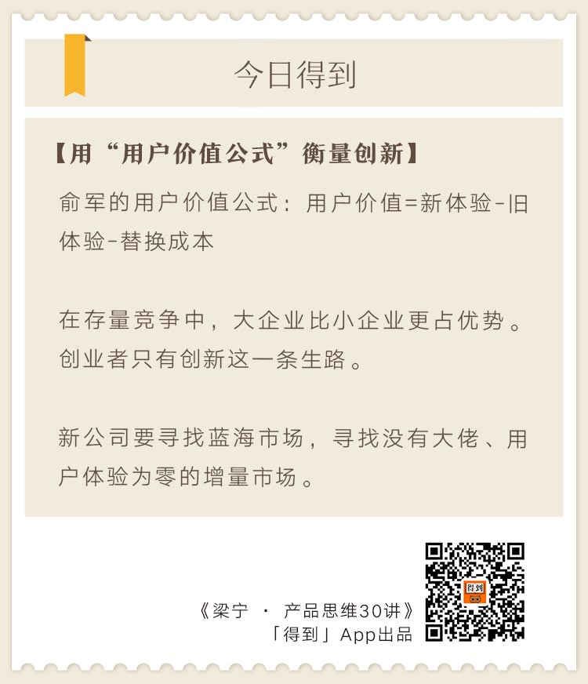

从这一讲开始，我们进入最后一个模块，第五模块——创新模式。
为什么要将创新模式单做一个模块？ 因为没有创新的产品，根本不应该去做。
我们为什么要做产品？为了帮别人、帮自己。
如果市场上已经有了同类产品，用户已经用得很好，如果你还做一样的产品，这不是为了用户，只是因为你不服或者心存侥幸。
用户为什么还需要你？这个产品真的能帮助你实现自己的人生目标吗？很难。
我很佩服的产品大神俞军有个用户价值的公式，我觉得这可以很好地回答这个问题。 这节课就谈谈俞军的用户价值理论，回答这个问题：为什么唯有创新一条路？
在增量市场里找机会
俞军是中国的顶级产品经理之一，做了百度贴吧、百度知道等几个中国用户量最大的产品。
他对产品经理的定义是这样的：产品经理是以创造用户价值为工具，打破旧的利益平衡，建立对己方有利的新利益链，建立新平衡的过程。
他没有说做产品，而说的是创造用户价值。用户价值是一个工具，产品经理用这个工具打破旧的利益平衡，建立对己方有利的新利益链、新平衡。
所有的产品开发与使用都是一个利益链和利益平衡，就好像一条河的流动，是水追求平衡的结果。你要开一条新河，把这条河的水引到自己的河里去，就需要打破这条河旧有的水位系统。
我曾写过一篇介绍腾讯怎么运营流量的文章，叫《改变大河的流向》。 互联网创业就是挖条自己的沟，抢夺别人江河里的流量，形成自己的河流与生态。
QQ是一条大河，微信是一条大河，百度是一条大河，百度贴吧也是一条大河……大河所过，形成自己的生态，巩固自己的水土。
大河之间，小河水也欢快地流淌。看新闻、看菜谱、做运动、听音乐、看视频、订机票、买螃蟹、聊八卦……互联网上江河纵横，8亿网民各得其所，形成了互联网的滚滚流量。
如何拥有自己的河流与生态？你的水源从哪里来？
地球上的水的总量是13亿8600万立方千米。这是一个固定的存量，如果你要开一条新的江河，唯有打破平衡把固定循环在某个体系中的水，引流到自己的系统中。这就是基于固定存量市场的运营争夺。
按照存量竞争的逻辑，强者为王、厚黑学、找靠山、向权力寻租、崇拜资源，这些成为了我们的成功学。
家里没什么背景，人不够狠，心也不黑，不懂办公室政治，不会抱大腿的人，在旧有的竞争模型里是没有成功的机会的。还好我们赶上了互联网代表的新经济。
我有个朋友刘韧曾经说过一句话：“我们信仰互联网。”
互联网不是存量竞争，而是增量竞争。
曾经存量里的超级大佬，在新的增量市场里可能毫无威胁。比如联想曾经风光无两，直到今天在PC制造业的存量体系里依然非常优秀，但在网络经济里完全没有竞争力，甚至不能威胁一个小创业者。
服务好你的用户，不用怕那些大佬。这就是我热爱互联网的原因。
从WPS的挑战，理解用户价值公式
俞军的用户价值公式：用户价值=(新体验-旧体验)-替换成本。
我觉得这个公式很好地解释了两个问题：
- 为什么在存量市场中竞争先发优势那么重要？
- 为什么BAT打创业者非常容易？
按照俞军的用户价值公式，你要撬动一个用户，依靠的工具是用户价值。那用户能得到的用户价值是什么呢？用户价值 = ( 新体验 - 旧体验 ) - 替换成本。
用这个公式可以解释一下为什么雷军英雄盖世，但当年他带领金山的WPS打微软那么艰难。
如果微软Office软件用户使用体验是90分，价格体验50分，两项相乘，微软Office软件带给用户的旧体验算45分。
金山WPS软件用户使用体验70分，价格体验90分，两项相乘，金山WPS软件带给用户的新体验算63分。
用户的替换成本包括什么？品牌认知、获取成本、学习成本、使用成本，包括使用过程中遇到问题得到及时帮助的便利程度等。
比尔·盖茨曾经是世界首富，微软公司的品牌、渠道、产品成熟度、客服服务系统都很成熟。网上还有随处可见的用户分享、使用小技巧。所以用户体验非常成熟，用户替换成本很高，我们算用户的替换成本是20分。
用户价值＝WPS新体验63分-Office旧体验45分-用户替换成本20分＝-2分。
雷军带领他的英雄团队做了一个综合体验很好的产品，但是用户几乎没有得到价值。
你认为别人为用户提供了45分的东西，而你为用户提供了63分的东西，你比对手提升了40%的用户价值。可是，你别忘了用户替换是有成本的。
真实情况是你付出63分，而用户得到的是-2分。你认为你做得更好，但用户视你为鸡肋。
创新是小企业唯一的活路
这是我们的血泪教训，同维度竞争，先发优势是很高的门槛。
很多朋友，包括雷军和我自己都曾经非常自负，觉得某个产品做得一般，自己可以做得比对方好，于是就杀进去。
小企业对大企业就得仰攻，那么用户替换成本极高。小企业提供的局部优化，加上用户替换成本可以忽略不计。如果没有奇招，用同样的产品，小企业仰攻大企业基本上没有赢的机会。
那为什么BAT打创业企业极其容易呢？同维度竞争，体量大占优，即使它后发。
从替换成本开始说，用户替换为BAT的成本几乎为零。替换成本包括哪些？用户体验、品牌认知、渠道方便、学习成本。
- BAT的产品用户体验都不错；
- 品牌认知成本为零；
- 渠道畅通，用户获得成本几乎为零；
- 你已经把用户教育好了，用户切换成BAT产品的学习成本为零。
市面上有很多音乐软件都做得不错，腾讯出个QQ音乐，功能的使用体验完全一样。腾讯渠道强大，大家很容易知道和安装QQ音乐。腾讯使用资金资源能力，垄断版权，热门音乐“搜得到，能下载”就是核心体验。于是，音乐App就QQ音乐一家独大了。
这就是BAT的典型打法，因为用户迁移成本极低，用大公司的体量优势，一点一点地优化用户体验，一点一点地挤压你、蚕食你。
一个产品，你明明可以做得更好，别人先做了，你可以比原来的产品优化20%～40％的体验，怎么办？看体量，如果对方体量远大于你，就放弃。
我们得出的血泪教训——同维度竞争，体量第一。就像是两个人拼拳脚，大个子打小个子。
如果几个竞争者体量差不多呢？那就是红海战争，会有一场漫长的拉锯战。只有两种方式能终结这种同维度乱战：要么有能降维攻击的企业出现，要么是资本意志强行合并。曾经的杀毒市场，千团大战、打车大战、外卖大战，莫不如此。
小企业、创业者还有什么机会呢？小企业唯一的活路就是创新。小企业想改变宿命，飞跃龙门，唯一的路就是离开存量市场，寻找增量市场。
傅盛找到新机会
我再讲一个，创业公司离开存量市场，在增量市场找机会的故事——猎豹CEO傅盛的故事。
我为什么喜欢傅盛的故事？因为他本来有机会在存量市场抱大腿，走上一条传统的成功之路。但是他铤而走险，放弃已知而且确认的存量市场，去完全陌生的增量市场摸索，并找到了自己的空间。
我在第三模块《系统生死线：猎豹和它的关键任务》那节中讲过，傅盛用野蛮人的姿态，甄别关键任务，在强敌大兵压境的压力下，完成了公司从软件公司向互联网公司的转型，暂时活了下来。
2012年，有人问我能不能投资傅盛，我说当然可以。原因很简单，互联网战争就是流量战争，流量资源最丰富的腾讯、百度以及新崛起的小米，三家一起扶植一个小兄弟傅盛，给的单一任务是让他替大家挡住周鸿祎。
我说：“三个最牛的大哥挺一个小弟，而且傅盛本人也很厉害，当然可以投。”
那个时候大家都是这么看的，他们和当时的我一样，小看了傅盛。
确实，如果傅盛善于抱大腿，当年他就不会离开360。江湖上手握流量最多的三个大哥，为这个小弟安排的路，傅盛还是不会走。
傅盛的动作是派了一个团队到美国，干什么？不知道。
这个团队就是为了摆脱已知，把自己丢进未知里，在完全的陌生感里找方向、找空间。 后来他们找到了猎豹清理大师（Clean Master）这个项目，然后猎豹公司在美国上市了。
傅盛为什么要这么做，又为什么成功了？
傅盛自己都说和360打得非常痛苦，虽然360软件最初是他自己从零做起来的，但即便是他自己，要按照自己曾经成功的路再成功一次，已经是不可能了。360打了3Q大战，把用户数扩展到了3亿，体量已经比猎豹大太多。
傅盛说：“对比360，我体量太小，正面仰攻真是不好打。”
他拼命做了一堆微创新，比360提前1到2周上线。一两周之后，同样的功能360就会跟上，而用户反而会觉得是猎豹在抄360。
这就是用户价值公式说的，当你正面仰攻时，微小的产品优化完全没有价值。
傅盛的一个小团队，到美国做了一个之前从没有人认真做过的清理大师，并借助Google应用商店快速多语种全球化。
这就是在以前没有人踏足的地方，踏上自己的足迹。在以前用户体验为零的地方，你的60分就是干干净净的60分，对于用户就是及格的。
存量市场，小企业正面仰攻，新体验做到80分，用户体验为零分。增量市场，在用户体验为零的地方，你只要做60分，用户就结结实实地觉得可以用了。
俞军说：“当你找到蓝海，找到一块用户体验为零的领域，你需要做的是什么？你需要把用户体验做到100分再发布，还是做到60分就快速铺开市场？当然是产品做到60分就赶紧上。”
速度第一，快速感染用户铺开市场，让最多的用户体验到你。这就是给后来者的壁垒，这就是蓝海的意义。
就好像当年在欧洲大陆混不下去的西班牙人，到了南美所向无敌一样。那些在欧洲的宫廷里混得很好的人，当然不会冒着风险穿越大海。现有存量市场的既得利益者，也犯不着考虑创新。
创新，找蓝海，找到没有大佬、用户体验为零的增量市场，是新公司唯一的改变命运的机会。
这是我在最后一个模块，用一个模块讲创新的原因。
你问我去向何方，我指着大海的方向。
你觉得你用过的什么产品用户迁移成本特别高？什么产品用户迁移成本很低？
说说你的体验，咱们在讨论区讨论一下。
